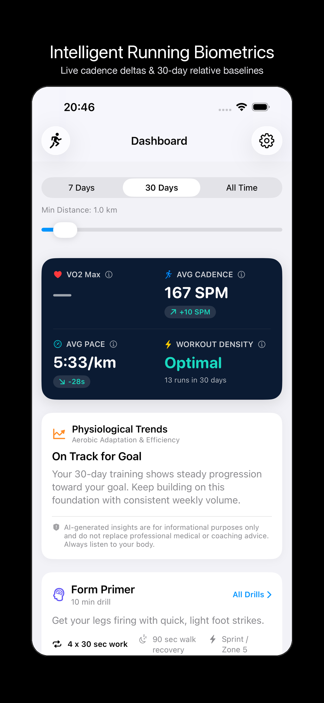
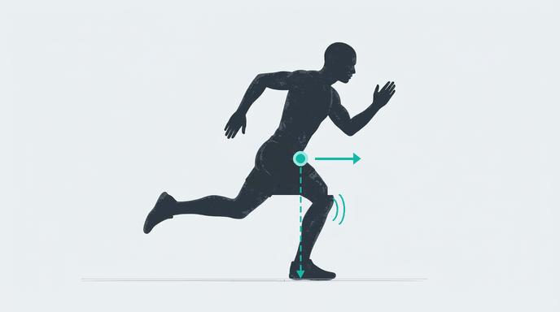
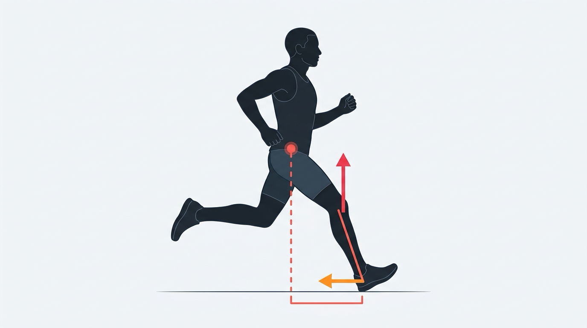

Your running form, decoded.
Turn raw Apple Watch telemetry into personalized, actionable coaching. 11-profile taxonomic classification, workout phase timelines, live cadence deltas, 30-day baselines, and targeted form drills—100% on your device.
Built for runners who value form and privacy.
No generic 180 SPM rules. No mandatory account signups. Every insight is generated locally on your iPhone.
30-Day Relative Baseline
Your cadence, pace, and cardiac efficiency are benchmarked strictly against your personal 30-day rolling history—never arbitrary textbook numbers.
11-Profile Taxonomic Classifier
Extracts 15-dimensional sliding-window feature vectors to automatically classify workouts with 98.26% accuracy across Pyramids, Hill Repeats, and Urban Runs.
Workout Phase Timelines & Readout
Proportional horizontal geometry blocks for warmups, surges, recoveries, and cooldowns. Mental preparation readout modal with Apple Watch handoff.
Apple FoundationModels
Runs local LLM inference directly on Apple Silicon. Swift applies deterministic physiological math before prompting for guaranteed safety.
Take a closer look at the experience.

Intelligent Running Biometrics
Ditch static vanity metrics. Runalyst extracts live cadence deltas, vertical oscillation, and ground contact balance from Apple Watch and benchmarks them against your rolling 30-day relative baseline.
- Zero arbitrary targets: evaluated strictly against your personal physiology
- Sub-second cadence delta tracking against your 30-day average
- Working stats engine that automatically trims dead-stop traffic pauses
The science, math, and logic under the hood.
Most fitness apps compress hours of continuous running into flat scalar averages. Here is how Runalyst preserves physiological time series, isolates authentic biomechanics, and guarantees AI coaching safety.
Automatic 11-Type Workout Classification
Standard running apps compress continuous workouts into flat scalar averages, collapsing intervals and tempo runs into generic buckets. Runalyst analyzes acceleration patterns, cadence clusters, and terrain dynamics to automatically categorize complex workout structures.
- Multi-Resolution Signal Analysis: Evaluates acceleration gradients, peak cadence clusters, elevation correlation, and stop-to-run transition dynamics.
- 11 Distinct Archetypes: Accurately identifies Pyramid Workouts, Hill Repeats, Urban Traffic Runs, Track Intervals, Tempo Surges, Strides, Steady Effort, Long Run, Recovery Run, Progression Run, and Fartlek.
- 98.26% Machine Learning Accuracy: Validated on authentic outdoor continuous telemetry with strict safeguards preventing classification conflicts.
Visual Workout Phases & Apple Watch Export
Executing complex interval drills requires mental preparation and clear pacing geometry before stepping onto the track or road.
- Proportional Phase Timelines: Warmup, surge reps, recovery blocks, and cooldown segments are rendered with exact duration weights.
- 5-Point Mental Preparation Modal: Presents Target Cues, Biomechanical Focus, Phase Breakdown, Strategy, and Effort bands before initiating.
- Dynamic Duration Scaling: Instantly scales active work and recovery intervals across 5m, 10m, and 15m presets, ready for one-tap export to Apple Watch WorkoutKit.
Cardiovascular Guardrails Prevent Overtraining
Generative AI should never guess physiological math or compromise runner safety. Runalyst computes all baseline statistics, fatigue markers, and aerobic thresholds locally before AI coaching generates guidance.
When elevated cardiac drift or acute fatigue is detected, safety rules automatically override training goals to protect joint and heart health:
The AI coach provides empathetic tone and actionable cues, but the underlying safety decisions and drill targets are 100% mathematically deterministic.
30-Day Time-Locked Longitudinal Baselines
Generic coaching claiming every runner must hold 180 SPM is physiologically incorrect. Optimal cadence and vertical oscillation depend on leg length, height, running economy, and aerobic history.
- Strict Rolling Window: Every biometric split is benchmarked against your personal rolling 30-day baseline on the day you ran.
- No Hindsight Leakage: Historical workouts are evaluated strictly against what your baseline was on that day—never retroactively biased by runs that happened weeks later.
- Coupled Form Diagnostics: Vertical oscillation (>10 cm) is mathematically linked to cadence to detect forward bounding vs. compact turnover.
Smart Traffic Pause Trimming & Field Calibration
Waiting at traffic lights and street crossings corrupts pace and biomechanical averages with resting zeros. Runalyst filters out stationary stops to report your true Working Stats while running.
- Smart Pause Detection: Intelligently detects and trims stationary pauses at red lights to calculate true Working Stats. When running continuously without stops, it preserves pure Apple HealthKit data without distortion.
- Tested on Authentic Outdoor Roads: Calibrated and validated across real-world outdoor road workouts with steep hills, traffic pauses, and variable weather—not sterile synthetic simulations.
- Sensor Noise Resilience: Rigorously stress-tested against real-world GPS jitter, cadence anomalies, and heart rate monitor lag across 137 automated test suites to guarantee zero false alerts.
Why We Focus on Those Metrics
Most fitness trackers report cadence, stride length, and ground contact time as isolated, disconnected scalars. Runalyst evaluates them through a deterministic physical law: overstride is not a single number—it is a physical conjunction of three variables.
Low Cadence (Δ < Baseline)
When turnover drops below your personal 30-day baseline, each stride requires higher vertical flight time to sustain pace. This allows the swinging foot to drift and strike significantly ahead of your center of mass.
High Stride Length / Speed
A long stride is only efficient when driven by powerful rear hip extension at race speeds. Artificially reaching forward with a straight knee during aerobic paces generates sharp deceleration shockwaves through the tibia and knee.
Elevated Ground Contact Time
Spring-like running relies on rapid Achilles tendon elastic recoil (<230 ms). Landing in front of the center of mass spikes GCT (>260 ms) as the body stalls in a braking phase rather than immediately rolling forward.

-
Landing Beneath Pelvis: Foot strikes close to center of mass with slight forward ankle lean, directing ground reaction force horizontally.
-
Soft, Flexed Knee: Bent knee cushions landing naturally through muscle engagement and Achilles tendon elastic recoil (<230 ms).
-
Near-Vertical Shin: Smoothly rolls into rearward hip extension and glute push-off without braking momentum.

-
Landing Ahead of Center of Mass (>30 cm): Foot casts outward with an angled shin, generating heavy deceleration shockwaves.
-
Locked Knee on Impact: Rigid, straightened leg cannot compress like a spring, transmitting kinetic collision directly into knee and hip joints.
-
High Braking & Vertical Bounce: Energy stalls in prolonged ground contact (>260 ms) and deflects upward into excessive vertical oscillation (>10 cm).
Architectural Comparison: Runalyst vs. Standard Fitness Apps
| Engineering Dimension | Standard Fitness Apps | Runalyst Native Engine |
|---|---|---|
| Run Classification | Scalar averages & Pace CV (collapses temporal sequence) | 11-Profile Automatic Classifier • 15D Feature Vectors • Proportional Phase Timelines |
| AI Coaching Logic | Prompting cloud LLMs to estimate physiological math | Local Deterministic Guardrails • On-device FoundationModels |
| Baseline Standards | Static universal charts (e.g. 180 SPM for all body types) | Personalized 30-Day Moving Window (time-locked to run date) |
| Sensor Noise & Pauses | Traffic stops dilute stride length and cadence | Smart Dead-Stop Trimming with precision HealthKit sync |
| Privacy & Data Pipeline | Health telemetry transmitted to external cloud servers | 100% On-Device • SwiftData SQLite • Apple Silicon local inference |
Ready to run smarter?
Experience private, on-device biometric telemetry and intelligent AI form coaching on your iPhone and Apple Watch.